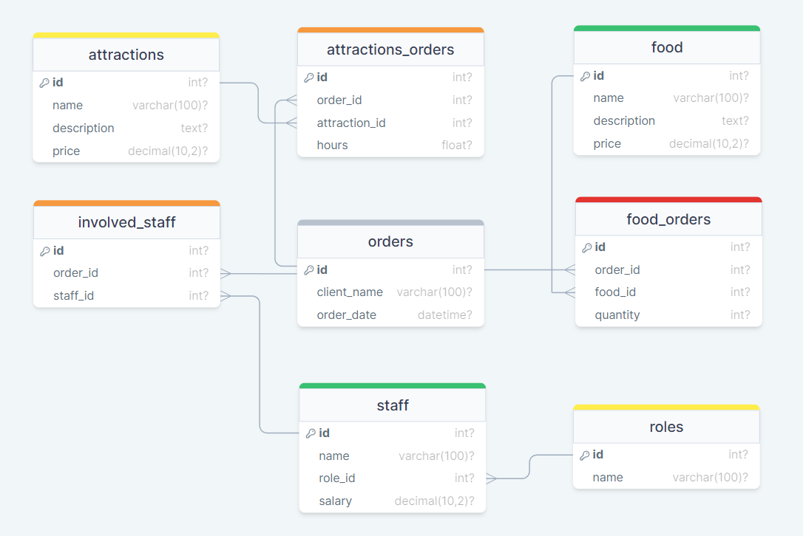

Таблица "attractions" содержит информацию об аттракционах Аквапарка, включая их идентификатор, название, описание и цену. Эти данные необходимы, чтобы можно было связать заказы, содержащие посещение аттракционов, с конкретными аттракционами и их ценой.
| Поле | Тип данных | Описание |
|---|---|---|
| id | INT | Уникальный идентификатор аттракциона |
| name | VARCHAR(100) | Название аттракциона |
| description | TEXT | Описание аттракциона |
| price | DECIMAL(10,2) | Цена за одно посещение аттракциона |
-- Создание таблицы attractions
CREATE TABLE attractions (
id INT AUTO_INCREMENT PRIMARY KEY,
name VARCHAR(100) NOT NULL,
description TEXT NOT NULL,
price DECIMAL(10,2) NOT NULL
);
Таблица "orders" содержит информацию о каждом заказе в Аквапарке, включая идентификатор заказа, имя клиента, идентификатор сотрудника, обслуживающего заказ, идентификатор аттракциона, на котором был совершен заказ, и время. С помощью FOREIGN KEY связь устанавливается с таблицами staff и attractions, чтобы можно было получить информацию о сотруднике и аттракционе, связанных с каждым заказом.
| Поле | Тип данных | Описание |
|---|---|---|
| id | INT | Уникальный идентификатор заказа |
| client_name | VARCHAR(100) | Имя клиента |
| order_date | DATETIME | Дата и время заказа |
-- Создание таблицы orders
CREATE TABLE orders (
id INT AUTO_INCREMENT PRIMARY KEY,
client_name VARCHAR(100) NOT NULL,
order_date DATETIME NOT NULL,
);
Таблица "attractions_orders" содержит информацию о том, какие аттракционы были заказаны в каждом заказе, включая идентификатор заказа, идентификатор аттракциона, количество оплаченных часов и идентификатор этой записи. С помощью FOREIGN KEY связь устанавливается с таблицами orders и attractions, чтобы можно было получить информацию о заказе и аттракционах.
| Поле | Тип данных | Описание |
|---|---|---|
| id | INT | Уникальный идентификатор заказа с аттракционом |
| order_id | INT | Идентификатор заказа, к которому относится данный заказ аттракциона (связь с таблицей "orders") |
| attraction_id | INT | Идентификатор аттракциона (связь с таблицей "attractions") |
| hours | FLOAT | Количество оплаченных часов |
-- Создание таблицы attractions_orders
CREATE TABLE attractions_orders (
id INT AUTO_INCREMENT PRIMARY KEY,
order_id INT NOT NULL,
attraction_id INT NOT NULL,
hours FLOAT NOT NULL,
FOREIGN KEY (order_id) REFERENCES orders(id),
FOREIGN KEY (attraction_id) REFERENCES attractions(id)
);Таблица "food" содержит список доступной еды в Аквапарке, включая идентификатор, название, описание и цену. Эти данные необходимы, чтобы можно было связать заказы, содержащие еду, с конкретными позициями в меню и их ценой.
| Поле | Тип данных | Описание |
|---|---|---|
| id | INT | Уникальный идентификатор блюда |
| name | VARCHAR(100) | Название блюда |
| description | TEXT | Описание блюда |
| price | DECIMAL(10,2) | Цена за одно блюдо |
-- Создание таблицы food
CREATE TABLE food (
id INT AUTO_INCREMENT PRIMARY KEY,
name VARCHAR(100) NOT NULL,
description TEXT NOT NULL,
price DECIMAL(10,2) NOT NULL
);
Таблица "food_orders" содержит информацию о том, какая еда была заказана в каждом заказе, включая идентификатор заказа, идентификатор еды, количество еды и идентификатор этой записи. С помощью FOREIGN KEY связь устанавливается с таблицами orders и food, чтобы можно было получить информацию о заказе и еде, связанную с каждой записью о заказе еды.
| Поле | Тип данных | Описание |
|---|---|---|
| id | INT | Уникальный идентификатор заказа еды |
| order_id | INT | Идентификатор заказа, к которому относится данный заказ еды (связь с таблицей "orders") |
| food_id | INT | Идентификатор блюда из меню (связь с таблицей "food") |
| quantity | INT | Количество заказанного блюда |
-- Создание таблицы food_orders
CREATE TABLE food_orders (
id INT AUTO_INCREMENT PRIMARY KEY,
order_id INT NOT NULL,
food_id INT NOT NULL,
quantity INT NOT NULL,
FOREIGN KEY (order_id) REFERENCES orders(id),
FOREIGN KEY (food_id) REFERENCES food(id)
);
Таблица "roles" содержит список должностей, доступных в Аквапарке, и их идентификаторы. В этой таблице необходимо заранее добавить все доступные должности, чтобы затем можно было связать их с сотрудниками.
| Поле | Тип данных | Описание |
|---|---|---|
| id | INT | Уникальный идентификатор должности |
| name | VARCHAR(100) | Название должности |
-- Создание таблицы roles
CREATE TABLE roles (
id INT AUTO_INCREMENT PRIMARY KEY,
name VARCHAR(100) NOT NULL
);
Таблица "staff" содержит информацию о сотрудниках Аквапарка, включая их идентификатор, имя, идентификатор должности, на которой они работают, и зарплату. С помощью FOREIGN KEY связь устанавливается с таблицей roles, чтобы можно было получить информацию о должности, занимаемой каждым сотрудником.
| Поле | Тип данных | Описание |
|---|---|---|
| id | INT | Уникальный идентификатор сотрудника |
| name | VARCHAR(100) | Имя сотрудника |
| role_id | INT | Идентификатор должности сотрудника (связь с таблицей "roles") |
| salary | DECIMAL(10,2) | Зарплата сотрудника |
-- Создание таблицы staff
CREATE TABLE staff (
id INT AUTO_INCREMENT PRIMARY KEY,
name VARCHAR(100) NOT NULL,
role_id INT NOT NULL,
salary DECIMAL(10,2) NOT NULL,
FOREIGN KEY (role_id) REFERENCES roles(id)
);
Таблица "involved_staff" содержит информацию о сотрудниках, задействованных в каждом заказе, включая их идентификатор, идентификатор заказа и идентификатор сотрудника. С помощью FOREIGN KEY связь устанавливается с таблицами orders и staff, чтобы можно было получить информацию о заказе и сотруднике.
| Поле | Тип данных | Описание |
|---|---|---|
| id | INT | Уникальный идентификатор задействованного сотрудника в заказе |
| order_id | INT | Идентификатор заказа, к которому относится данный задействованный сотрудник (связь с таблицей "orders") |
| staff_id | INT | Идентификатор сотрудника, задействованного в заказе (связь с таблицей "staff") |
-- Создание таблицы involved_staff
CREATE TABLE involved_staff (
id INT AUTO_INCREMENT PRIMARY KEY,
order_id INT NOT NULL,
staff_id INT NOT NULL,
FOREIGN KEY (order_id) REFERENCES orders(id),
FOREIGN KEY (staff_id) REFERENCES staff(id)
);
Схема связей между таблицами в базе данных системы автоматизации деятельности Аквапарка представлена на следующей диаграмме:
Связи между таблицами:
role_id.id привязана информация из таблиц attractions_orders, food_orders и involved_staff.order_id и attraction_id, которые связывают записи из этих таблиц, а также столбец hours, который указывает количество оплаченных часов.order_id и food_id, которые связывают записи из этих таблиц, а также столбец quantity, который указывает количество заказанных блюд.order_id и staff_id, которые связывают записи из этих таблиц.DELETE FROM orders
WHERE id = 1;
DELETE FROM food_orders WHERE order_id = 1;
DELETE FROM attractions_orders WHERE order_id = 1;
DELETE FROM involved_staff WHERE order_id = 1;
SET @order_id = 2;
SELECT
(SELECT SUM(fo.quantity * f.price)
FROM food_orders fo
JOIN food f ON fo.food_id = f.id
WHERE fo.order_id = @order_id)
+
(SELECT SUM(ao.hours * a.price)
FROM attractions_orders ao
JOIN attractions a ON ao.attraction_id = a.id
WHERE ao.order_id = @order_id) AS total_price;WITH orders_on_date AS (
SELECT id
FROM orders
WHERE DATE(order_date) = CURDATE()
)
SELECT
(SELECT SUM(ao.hours*a.price)
FROM attractions_orders ao JOIN attractions a ON ao.attraction_id = a.id
WHERE ao.order_id IN (SELECT id FROM orders_on_date))
+
(SELECT SUM(fo.quantity * f.price)
FROM food_orders fo JOIN food f ON fo.food_id = f.id
WHERE fo.order_id IN (SELECT id FROM orders_on_date)) AS total_price;
SELECT s.name, r.name
FROM involved_staff i
JOIN staff s ON
i.staff_id = s.id
JOIN roles r ON
s.role_id = r.id
WHERE i.order_id = 12;SELECT s.name
FROM staff s
WHERE s.id NOT IN(
SELECT DISTINCT i.staff_id
FROM involved_staff i
JOIN orders o ON
i.order_id = o.id
WHERE
DATE(o.order_date) = CURDATE()
);SELECT staff.name
FROM staff
LEFT JOIN involved_staff ON staff.id = involved_staff.staff_id
AND involved_staff.order_id IN(
SELECT id FROM orders
WHERE orders.order_date >= DATE_SUB(CURDATE(), INTERVAL 7 DAY)
)
WHERE involved_staff.id IS NULL;SELECT
roles.name,
AVG(staff.salary) as average_salary
FROM roles
INNER JOIN staff ON roles.id = staff.role_id
GROUP BY roles.name;SELECT
f.name,
COUNT(*) AS total_orders
FROM food_orders fo
JOIN food f ON fo.food_id = f.id
GROUP BY f.id
ORDER BY total_orders DESC
LIMIT 10;
SELECT name, price
FROM food WHERE price < 200;
SELECT id, name
FROM food
WHERE id NOT IN (
SELECT food_id FROM food_orders
);
SELECT id, name, price
FROM attractions;SELECT
a.name,
COUNT(ao.attraction_id) AS num_orders,
a.price
FROM
attractions_orders ao
JOIN attractions a ON
ao.attraction_id = a.id
GROUP BY
a.id
ORDER BY
num_orders
DESC
LIMIT 1;SELECT COUNT(*) FROM orders
WHERE DATE(order_date) = CURDATE();Создание базы данных для системы автоматизации деятельности Аквапарка позволит упорядочить и ускорить процессы управления данными о заказах, аттракционах и меню еды, а также удобнее следить за персоналом. С помощью связей между таблицами можно легко собирать статистику, например, "какие развлечения и блюда пользуются наибольшим спросом" или "кто самый активный сотрудник".
Кроме того, благодаря использованию таблиц-связок для связи многие-ко-многим между таблицами, можно легко добавлять новые записи в базу данных без необходимости изменения схемы таблиц. Это делает нашу базу данных гибкой и расширяемой для будущих нужд аквапарка.
Таким образом, база данных облегчает управление большим объёмом данных и повышает эффективность работы сотрудников Аквапарка. И, надеемся, наши данные не утекут, как по водяной горке.